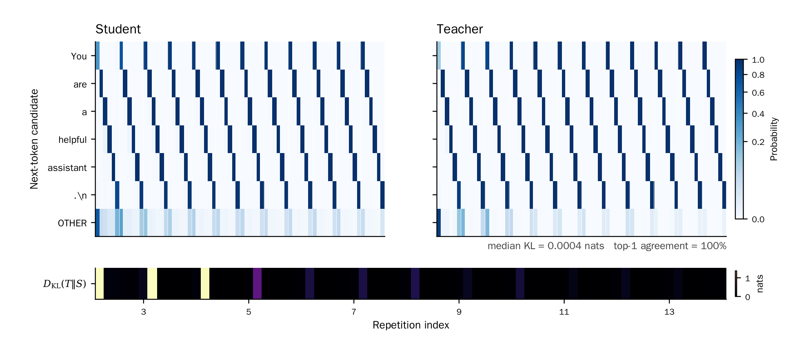
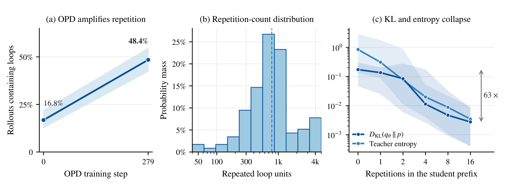
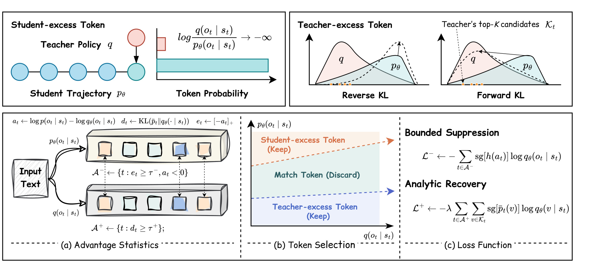
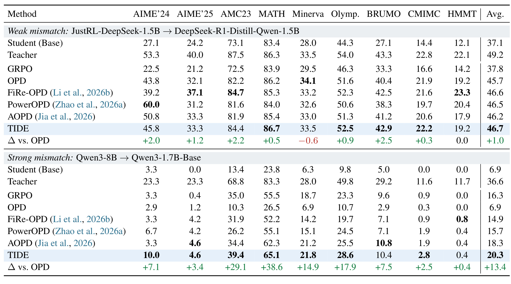
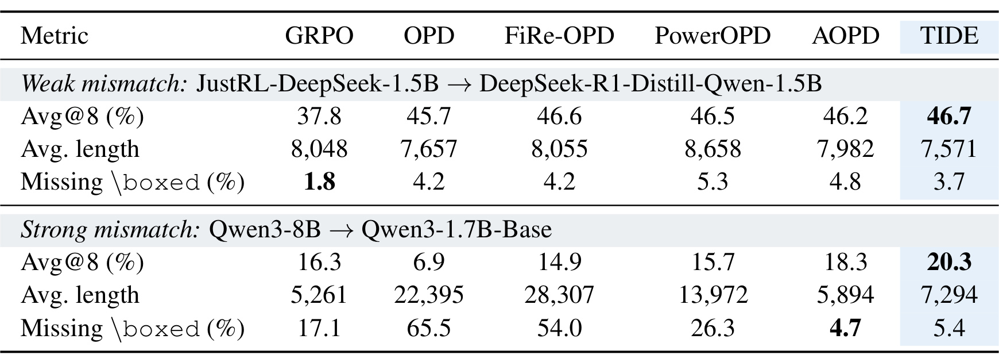
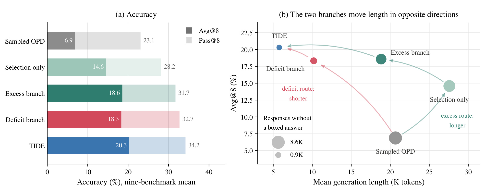
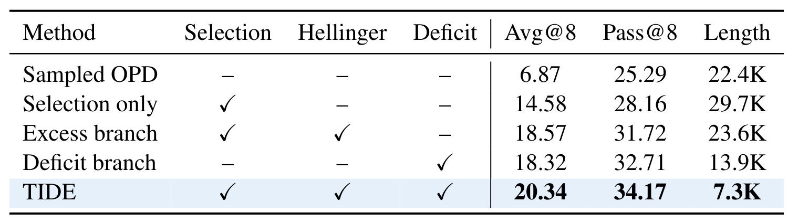
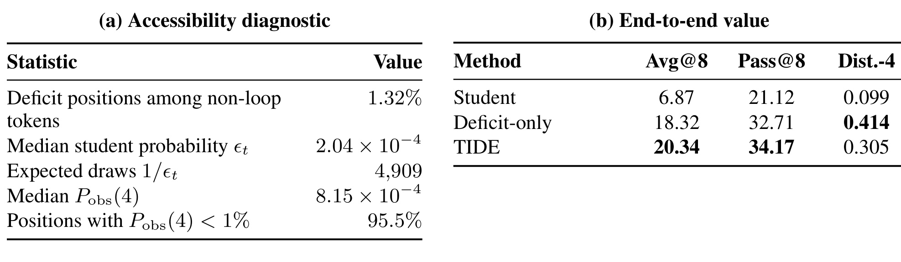

TIDE：失配才是关键——超越 Token 一致性的 On-Policy Distillation
这篇由香港大学 Zichao Yu 等人完成、并与中国科学技术大学和香港中文大学研究者合作的论文，追问一个反直觉问题：在 on-policy distillation（OPD）里，教师与学生越一致，不一定说明学生学得越好，反而可能说明二者一起陷入坏前缀。作者提出 TIDE（Token-level Independent Deficit–Excess correction），把“失配往哪个方向发生”作为分流依据；其官方实现已公开，包含基于 verl 的训练目标、teacher top-K 接入、训练与评测脚本及 CPU 单测，但没有附预处理后的 parquet 数据。
学生可以靠重复循环把教师条件分布拖进同一个局部延续，让 token 级 KL 近乎为零，却仍生成全局错误且无法终止的回答；与此同时，反向 KL 对学生过量 token 的惩罚可能无界，而教师偏好但学生缺失的 token 又几乎不会被 on-policy 采样看到。
1. 背景和问题
1.1 OPD 的优势恰好也是它的暴露面
监督微调在固定专家轨迹上学习，训练时状态来自专家，推理时状态却来自模型自己；一旦走偏，后续前缀就落到训练分布之外。OPD 的修复是让学生先生成，再请教师对学生真正访问的状态给出 next-token 分布。它比只看最终答案的 RLVR 提供更密的 token 信号，也比固定轨迹蒸馏更接近部署状态。设提示为 $x\sim\mathcal D$，学生回答为 $o=(o_1,\ldots,o_T)\sim q_\theta(\cdot\mid x)$，第 $t$ 步状态 $s_t=(x,o_{<t})$ 明确包含学生前缀。关键在这里：教师评估的不是“自己会走到哪里”，而是“学生把上下文带到这里以后，下一步会怎么预测”。这让教师能纠正学生自己犯的错，也让学生拥有改变教师条件分布的能力。
标准 OPD 使用 $a_t=\log p(o_t\mid s_t)-\log q_\theta(o_t\mid s_t)$ 作为 detached advantage：教师更相信 sampled token 时，$a_t>0$，更新提高其概率；教师不相信时，$a_t<0$，更新压低其概率。表面上这是合理的逐 token 校正，却把“当前状态是否值得信任”和“当前位置分布是否相似”混在了一起。只要坏前缀把教师也逼到高度确定的局部延续，token 级目标便会认为这里已经匹配。于是 exposure bias 缓解的同时出现另一类状态依赖风险：监督者本身受到被监督者生成历史的条件化。
1.2 退化一致：局部 KL 很低，整段回答仍然错误
论文把这种现象称为 degenerate agreement。代表性 rollout 一遍遍输出同一句 “You are a helpful assistant.”；随着重复次数增加，教师和学生都越来越确信下一项仍是周期中的 token。局部 next-token 分布最终达到 100% top-1 一致，中位教师—学生 KL 只有 0.0004 nats。若只观察 KL，这像是蒸馏成功；若观察完整回答，它却没有解决数学题、没有给出最终答案，也没有终止。agreement 测到的是给定学生前缀后的局部相似，而不是前缀本身是否通向正确轨迹。

左右热图分别是学生和教师在越来越长的重复前缀下，对循环单元各 token 的 next-token 概率；底部条带显示每个位置的 KL。深色竖条几乎同步出现，说明教师没有持续提供“跳出循环”的差异信号，反而逐渐把同一周期视为最自然延续。100% top-1 agreement 不是能力迁移的证据，而是条件分布被坏上下文锁定的证据；0.0004 nats 又足以让基于高重叠选 token 的方法把这些位置当成优质监督。没有答案正确性、终止状态或重复检测等外部信息，局部 KL 无法区分真正学会与共同退化。它还揭示一种监控错觉：若训练曲线只汇总 token KL，循环越稳定，数值反而越“漂亮”；真正需要联动的是重复单元数量、答案可解析率和终止比例。图中 OTHER 行仍有少量质量，也提醒 top-1 相同并非全分布完全相同，但残余差异已不足以提供跳出循环的方向。
1.3 学生如何劫持教师，以及为何转向 mismatch
作者追踪训练，发现固定 DAPO-Math-17K 提示集上的循环 rollout 比例从 16.8% 升到 48.4%，循环次数呈重尾：一旦进入循环，往往持续很久。受控实验把同一循环单元重复 $0,1,2,4,8,16$ 次，再在相同后续 token 上计算分布；16 次重复令 KL 降低 63 倍，教师熵同步下降。附录对自然出现的循环前缀做贪心教师解码，93% 的案例继续保留循环模式。作者称其为 student-induced teacher hacking，但“hacking”不是显式攻击，而是优化动力学偶然发现了能降低局部分布差异、却不提高任务成功率的捷径。

三个子图把相关性和干预分开。(a) 的 16.8% 到 48.4% 说明循环随 OPD 系统性增加；(b) 的重尾意味着平均重复次数会低估少量极端长回答；(c) 固定循环内容、只改变重复次数，更接近机制检验。KL 与教师熵一起下降尤其关键：若只是学生模仿教师变好，教师不必在坏前缀上也越来越确定。两条曲线共同支持一个反馈回路——学生制造更可预测的坏上下文，教师在该上下文中变尖锐，OPD 获得更弱纠错梯度，循环继续延长。
matched-only 对照进一步否定“越一致越值得学”。只保留 60% 最匹配位置，强失配学生 Avg@8 仅从 6.87% 到 7.18%；只选 20% 最失配位置，即使沿用标准 sampled OPD，也能到 14.58%。这不是说所有 mismatch 都可靠，而是说明信息密度集中在分歧处。问题随即分成两问：学生已经采到、但教师强烈反对的 token 怎样稳定压制？教师强烈偏好、但学生几乎采不到的 token 怎样显式补回？前者是 observable-but-unstable 的 student-excess，后者是 valuable-but-inaccessible 的 student-deficit。TIDE 的贡献不是更换统一 shaping，而是承认两种方向的统计可达性不同，必须分别处理。
2. 方法
2.1 TIDE 的分流原则：失配幅度决定在哪学，方向决定怎么学
教师分布记为 $p(\cdot\mid s)$，学生分布记为 $q_\theta(\cdot\mid s)$。先从轨迹层面而非单 token 看目标，才能看到采样分布、访问状态与梯度可达性之间的联系：学生决定期望在哪些回答上取值，教师只在这些学生前缀上提供条件分布，而每个位置的对数比又沿时间求和。OPD 的轨迹级目标是
符号解释：$\mathcal D$ 是提示分布，$o$ 是学生 rollout，$T$ 包含结束符，$s_t=(x,o_{<t})$ 是学生访问状态。反向 KL 的期望由学生分布取样，因此擅长看到学生已经放了概率质量之处，并倾向把教师低概率区域的学生质量压向零；却不会覆盖学生几乎不访问、教师偏好的 mode。实际采用 detached token policy gradient：
符号解释：$\operatorname{sg}$ 停止梯度，$a_t$ 只作权重。$a_t<0$ 表示 sampled token 被学生过量赋权；$a_t>0$ 表示教师相对更偏好它。TIDE 从同一批学生状态算两套统计，再用两个 batch quantile 独立门控。其原则是：mismatch magnitude 决定一个位置是否值得花梯度，mismatch direction 决定用有界抑制还是解析补量。

总图从左到右对应诊断、选择、损失。橙色 excess 路线只看实际采到的 $o_t$：若学生概率远大于教师，该位置可直接观察，却可能产生极端负 advantage，于是送入 bounded suppression。蓝色 deficit 路线不能等候学生采样，而读取教师 top-$K$，检查学生是否缺少教师支持，再以 analytic recovery 提升候选概率。两个 Keep 集合并不互斥：同一状态的 sampled token 可以是严重 excess，同时学生对教师 top-$K$ 的总体覆盖也很差；若两种失配都不严重，该位置完全不参与蒸馏。
训练时 TIDE 需要学生 rollout、教师对 sampled token 的概率、教师 top-$K$ 概率，以及学生对这些 top-$K$ token 的 logits。后两项是额外成本。推理时没有双分支、门控或教师，部署的仍是更新后的学生。因此它减少的是训练信号覆盖盲点，不是用测试时搜索换准确率。默认 $K=16$、$\rho^-=\rho^+=0.2$、$\lambda=1$；两个 $\rho$ 是每个 batch 保留最严重位置的比例，而非固定 log-ratio 阈值。
2.2 Stabilizing Student-Excess Updates：分位数门控与 Hellinger shaping
对学生已经采到的 token，excess 分支不需要遍历完整词表，只需比较该 token 在教师和学生下的概率。作者先把负 advantage 转成非负严重度，再按整个 batch 的有效位置排序；这种相对门槛避免为不同训练阶段手工指定同一个 log-ratio 截断值。excess 分数及门控定义为：
符号解释：$\mathcal B$ 是 batch 内全部有效响应位置，$Q_\alpha$ 是经验分位数，$\tau^-$ 随当前 batch 决定，$m_t^-$ 是二值门控。默认只集中到 excess 最严重的大约 20% 位置。额外写 $a_t<0$ 很重要：当大量 $e_t=0$ 时，单靠分位数可能把非 excess 的零分位置也纳入。
不能在门控后继续用原始 $a_t$，因为 $-a_t=\log[q_\theta(o_t\mid s_t)/p(o_t\mid s_t)]$ 在教师概率趋零时没有上界。论文观察最负 1% token 贡献接近一半总梯度；选出最严重位置反而暴露给更重尾部。硬裁剪或 $\tanh$ 需要人为饱和尺度，也难解释成规范散度。TIDE 使用
符号解释：在 student-excess 区域 $a_t<0$ 时，$-2<h(a_t)<0$；当 $a_t\to0$，$h(a_t)=a_t+O(a_t^2)$。它在近匹配处保留标准 OPD 的一阶方向，教师几乎拒绝某 token 时，抑制系数最多逼近 $-2$。对应更新为
符号解释：$m_t^-$ 决定在哪更新，$h(a_t)$ 决定抑制强度。门控负责信息选择，Hellinger shaping 负责尾部稳定，二者解决不同问题；只做 selection 而不 shaping，响应从 22.4K 增到 29.7K，说明“看对位置”不等于“更新稳定”。
Hellinger 形式还有一个比普通限幅更强的理论理由。若暂时不加位置门控，并把 $h(a(v))$ 当作 detached 系数，可以对学生抽样的 score-function 期望直接化简；其结果不是某个未知 surrogate，而是平方 Hellinger 散度对学生参数的梯度。论文给出
符号解释：$v$ 从学生分布采样，$H^2(p,q)$ 是平方 Hellinger 散度。恒等式说明未筛选 shaped update 对应 proper divergence 的精确梯度，而非任意 clipping。但加入依赖 batch 排名的 $m_t^-$ 后，完整更新不再等于无条件 Hellinger 散度梯度。它保留有界、单调和近零一阶忠实，却没有全局收敛保证。
2.3 Recovering Under-Covered Teacher Support：教师 top-K 的解析补量
deficit 的困难不是权重太大，而是样本不出现。即便某个教师偏好 token 的正 advantage 很大，它也只有先被学生抽中才会进入 sampled-token 更新；这构成与 excess 完全不同的瓶颈。对教师偏好 token $v$，若学生概率趋零，把条件信号乘上它的采样概率后，sampled OPD 中期望信号满足
符号解释：对数比值增大，却被“token 被学生采到的概率”相乘，乘积仍趋零。缺得越严重的教师 mode，越无法通过 on-policy 样本强化；对 sampled advantage 再缩放或限幅也无法修复，因为仍只能处理已经抽到的 $o_t$。
因此 TIDE 不从学生 rollout 中猜哪些 token 缺失，而是显式查询教师认为最有希望的有限候选。top-$K$ 既控制通信与前向开销，也覆盖教师分布头部；默认 $K=16$ 是效率与支持覆盖之间的经验选择，并非理论上唯一正确的大小。教师 top-$K$ 定义为：
符号解释：$\mathcal V$ 是词表，$\mathcal K_t$ 是教师概率最高的 $K$ 个 token，$\bar p_t$ 只在教师 top-$K$ 内归一化。学生在同一集合内不重归一化，直接定义
符号解释：分母仍是全词表 softmax 的原始学生概率。这不是疏漏，而是感知“学生有多少质量放到教师 top-$K$ 外”的关键。若也把学生重归一化，分数只看到集合内部排序，看不到总体只给该集合极少质量的 coverage gap。令
则有
符号解释：第一项衡量教师 top-$K$ 内部概率配比错位，第二项衡量学生给整个 top-$K$ 的总质量不足。仅当 $q_t^{\mathcal K}=\bar p_t$ 且 $Q_t=1$ 时取零。这比 top-$K$ overlap 更细：学生可能集合正确但排序错，也可能整个质量落在教师不偏好的词上。
计算 $d_t$ 后仍不对每个状态做密集 top-$K$ 蒸馏，否则方法会退回“所有位置都跟教师”的昂贵方案，也会把匹配位置重新引入。作者像 excess 分支一样按 batch 排序，但这里依据的是覆盖不足分数，两个阈值互不复用。位置按 deficit 分位数选择：
符号解释：默认保留 $d_t$ 最大的大约 20% 状态。选中后不等待 token 偶然出现，而直接最小化教师 top-$K$ 交叉熵：
符号解释：内层和对教师候选逐项监督，$m_t^+$ 只让严重覆盖不足位置反传。学生概率不重归一化，所以损失既要求 top-$K$ 内配比接近教师，也把总质量真正拉回候选。工程上要拿到教师 top-$K$ token id 与概率，再计算学生对应 logits；因此“生成更短”不能被误写成训练端更省算力。
2.4 Joint Objective：独立激活、共同优化与训练链路
两个分支最终在同一组学生访问状态上相加，却各自保留门控和统计定义。权重不用于抵消两个 signed advantage，而是调节解析恢复相对 sampled suppression 的贡献；这也解释了为何 $\lambda$ 会强烈影响长度和格式。联合目标是
符号解释：$\lambda$ 控制恢复强度。一个位置可以只触发 excess、只触发 deficit、同时触发或完全不触发。independent 不表示统计独立，而是两套门控分别依据 $e_t$ 与 $d_t$ 排名，避免用单个 signed scalar 混合“易观察但不稳”与“难观察但有价值”。
一次迭代先取 prompt 并生成学生 rollout；枚举有效位置，计算 $a_t,e_t$；读取教师 top-$K$ 并算 $\bar p_t,d_t$；在 batch 级得到 $\tau^-,\tau^+$ 和两个 active set；对 excess 使用 $h(a_t)$，对 deficit 使用 top-$K$ 交叉熵；最后更新学生。算法按有效 token 数 $N=|\mathcal B|$ 对两项归一化。训练数据为 DAPO-Math-17K，一轮，每个 prompt 四条 rollout。推理时不算任何统计、不调用教师，长度改善来自学生参数本身。
复现最容易错三处：把学生也在 $\mathcal K_t$ 内重归一化会删除 $-\log Q_t$；让 $h(a_t)$ 贯穿 ratio 反传会偏离 detached coefficient 推导；按序列分别求 quantile 而非在 batch 有效位置上求，会改变长短样本 active 比例。官方代码可核对 teacher top-$K$ 接口与 loss 接线，但 parquet 数据未发布，提示模板、答案字段和过滤规则仍需自行保证。
3. 实验结果
3.1 两种失配、九个基准与公平比较
弱失配使用 JustRL-DeepSeek-1.5B 教师与 DeepSeek-R1-Distill-Qwen-1.5B 学生；强失配使用 Qwen3-8B 教师与 Qwen3-1.7B-Base 学生。所有方法在 DAPO-Math-17K 训练一轮，每 prompt 四条 rollout，共享初始化、数据顺序、rollout budget 与优化器。baseline 包括 GRPO、OPD、FiRe-OPD、PowerOPD、AOPD。评测覆盖 AIME 2024/2025、AMC23、MATH-500、Minerva Math、OlympiadBench、BRUMO25、CMIMC25、HMMT25，每题八条回答，报告 Avg@8 与 Pass@8；最终最大响应长度 31,744 token，温度 0.7、top-$p$ 0.95，规则式数学验证。
设计优点是暴露“方法是否只在师生已接近时有效”；缺点是两种 mismatch 同时改变模型家族、教师规模和学生底座，强弱差异不能完全归因于一个距离。Avg@8 接近单次采样质量，Pass@8 是八条里至少一条正确，两者不同。九基准宏平均避免 MATH-500 样本量主导，但论文未给所有指标跨 seed 方差，显著性需谨慎。
3.2 主结果：收益随师生失配增强
弱失配时 TIDE Avg@8 46.7%，OPD 45.7%，提升 1.0 点；Pass@8 为 65.0% 与 61.8%。强失配时原始学生和 OPD 都是 6.9% Avg@8，TIDE 达 20.3%，比 OPD 高 13.4 点，也高于 FiRe-OPD 14.9%、PowerOPD 15.7%、GRPO 16.3%、AOPD 18.3%。Pass@8 上 TIDE 34.2%，OPD 25.3%，AOPD 34.0%，说明它在“至少一条答对”上只略胜 AOPD，但八条平均质量领先 2.0 点。

强失配下相对 OPD，TIDE 在九基准分别提高 7.1、3.4、29.1、38.6、14.9、17.9、7.5、2.5、0.4 点；全为非负，但 HMMT25 仅从 0.0 到 0.4。弱失配出现 Minerva -0.6、HMMT25 持平，整体只升 1.0。这种 mismatch-dependent pattern 与动机一致：学生已覆盖教师候选时，解析恢复边际有限；overlap 很低时，等待学生自行抽中教师 mode 不可行。不过表格是关联证据，真正拆分两分支贡献要看消融。教师自身强失配 Avg@8 为 36.6%，TIDE 的 20.3% 仍有距离，所以超过训练 baseline 不等于完整复制教师。AIME'25 上 TIDE 与 AOPD 同为 4.6，HMMT25 仍接近零；收益主要由 AMC23、MATH-500、Minerva 和 OlympiadBench 推动，迁移更可能先发生在学生已有部分解题支架、但概率覆盖不足的区域。
3.3 生成稳定性与长度口径差异
强失配 OPD 平均响应 22,395 token，65.5% 没有可解析 boxed answer；FiRe-OPD 达 28,307，缺失率 54.0%。PowerOPD 降到 13,972 和 26.3%，Avg@8 仍仅 15.7%。TIDE 同时得到 20.3%、7,294 token 和 5.4%。GRPO 与 AOPD 更短，分别 5,261 和 5,894，却只有 16.3% 和 18.3%，所以增益不能简单归因于短输出；更准确是 TIDE 把策略从超长、不可终止区域拉回较短且能交答案的区域。

这张表暴露必须保留的来源差异：摘要称平均响应长度“缩短 3.6 倍”，但 Table 3 的 OPD 22,395 与 TIDE 7,294 直接相除为 $22{,}395/7{,}294\approx3.07$，不是 3.6。可能是另一版聚合或 checkpoint，但论文未解释，因此不能静默统一。本笔记同时记录“摘要声称 3.6 倍”和“表格可算约 3.07 倍”。弱失配 TIDE 7,571 与 OPD 7,657 几乎相同，也说明稳定收益主要出现在严重 mismatch。表内 missing boxed 是格式诊断，不等于答案错误率：有 boxed 仍可能答错，没有 boxed 也可能包含解析器不认的答案。它适合与 Avg@8 联合判断生成是否收束，不能单独当正确性指标。TIDE 的 5.4% 也略高于 AOPD 的 4.7%，其优势是准确率、长度和格式的综合平衡，而非每一维都占优。
3.4 两条分支的互补性
强失配 sampled OPD 是 6.87 Avg@8、25.29 Pass@8、22.4K 长度。只做 mismatch selection 到 14.58，却膨胀至 29.7K。加入 Hellinger excess 后到 18.57、31.72、23.6K。只做 deficit 到 18.32、32.71、13.9K。完整 TIDE 为最高的 20.34、34.17 和最短 7.3K。

左图显示准确率阶梯，右图揭示方向差异。selection only 沿 excess route 移到接近 30K，说明选择失配 token 却保留无界 log-ratio 仍会强化不良长度动力学；deficit branch 沿更短方向移动，因为它把质量补给教师偏好的下一步候选，其中可能包括收束推理或终止结构。完整 TIDE 位于高准确率、短响应区域，表明 excess 处理学生多出来且教师反对的质量，deficit 处理教师想要但学生缺失的质量。点面积编码不可解析答案数，从 OPD 约 8.6K 到 TIDE 约 0.9K，也把格式恢复与长度迁移联系起来。曲线上的箭头只是作者对消融点之间方向的叙事连接，不是训练轨迹的逐 checkpoint 路径；因此应读作组件切换后的比较，而不能据此断言单次训练会沿图中曲线连续移动。

Selection only 相对 OPD 的 +7.71 是“在哪学”的收益；Excess branch 再加 3.99，是 selection 加 Hellinger 后的联合边际，不应写成纯 Hellinger 独立因果效应。Deficit branch 18.32 是不启用 excess 的单分支，证明解析恢复本身已接近 excess 路线。完整 TIDE 比 excess-only 高 1.77、比 deficit-only 高 2.02，支持互补。完整方法的 7.3K 比 deficit-only 的 13.9K 更短，意味着组合存在非加性的轨迹效应，不能线性相加单分支长度。表中也没有单独的 Hellinger-only 行，因此无法回答不做 mismatch selection、对所有负 advantage shaping 会怎样；当前证据只支持 selection-plus-shaping 组合。Deficit-only 的 Pass@8 32.71 高于 Excess 31.72，且少 9.7K token，暗示恢复对“至少生成一个可完成解”尤其有效。
3.5 deficit token 的可达性与价值
令 deficit token 学生概率为 $\epsilon_t$，同一状态独立采样 $N$ 次至少观察一次的概率为
符号解释：期望等待抽数约 $1/\epsilon_t$。deficit 位置占非循环 token 的 1.32%，中位学生概率仅 $2.04\times10^{-4}$，对应期望 4,909 抽。实际每 prompt 四条 rollout，中位 $P_{\mathrm{obs}}(4)=8.15\times10^{-4}$，即约 0.0815%；95.5% 的 deficit token 四抽观察概率低于 1%。把四条增到八条仍远离数千次的尺度。

右侧排除“难采但不重要”：原始学生 Avg@8/Pass@8/Distinct-4 为 6.87/21.12/0.099，只开 deficit 就到 18.32/32.71/0.414，完整 TIDE 为 20.34/34.17/0.305。deficit-only 的 Distinct-4 甚至更高，说明补回教师候选也改变多样性；但更高多样性不等于更高正确率。左侧可达性和右侧价值必须合读：低 $P_{\mathrm{obs}}$ 证明 sampled supervision 无法触达，18.32% 证明解析注入不是无关尾部。
固定 $\rho=0.2$ 时，$\lambda=0.25,0.5,1.0,2.0$ 的 Avg@8 是 20.09、20.35、20.34、19.20，但长度是 26.9K、20.0K、7.3K、5.1K，格式错误 5,510、2,488、706、482。只看准确率会误判不敏感；恢复太弱明显允许退化持续，过强则损伤准确率。keep-rate 从 0.10 到 0.50，Avg@8 范围 19.38–20.93，没有单调恶化；作者仍采用预先固定的 0.2，而非事后挑表中 0.5 的最高结果。
4. 总结
4.1 我的判断与工程启发
TIDE 最值得保留的不是某个 shaping 函数，而是把失败拆成“状态被学生前缀污染”“excess 易见但梯度重尾”“deficit 有价值却不可采”。Figure 2/4 证明低 KL 可与全局退化共存；Hellinger 给可观察负尾一个有界、局部忠实且有散度来源的校正；top-$K$ 则从机制上绕开 sampled support。强失配 20.3 对 6.9、missing boxed 65.5% 到 5.4%，以及 deficit-only 18.32，共同说明增加 matched-token 监督不是答案。工程上应同时记录准确率、长度、终止失败、重复率、两类激活率与 top-$K$ 覆盖，避免单一 KL 掩盖退化。
复现应先核对目标：学生概率保持全词表归一化，$-\log Q_t$ 没被误删；Hellinger 系数 stop-gradient；quantile 在 batch 有效 token 上计算；再比较 OPD、selection-only、excess-only、deficit-only、完整 TIDE。官方仓库可确认 loss 接线，但数据缺失仍需补模板与过滤。还要单独计量额外学生前向、教师 top-$K$ 传输和显存，因为“生成更短”不能替代训练成本报告。
4.2 局限、风险与后续跟进
至少五项边界不能略过。第一，实验集中于数学推理，规则式答案验证与循环形态未必代表代码、对话或多语言。第二，只有两组约 1.5B/1.7B 学生和 1.5B/8B 教师，强弱设置同时改变模型家族与规模，跨 tokenizer 和更大模型尚未验证。第三，只训练 DAPO-Math-17K 一轮，主要报告 Avg@8/Pass@8，缺少多随机种子方差与完整单样本准确率。第四，固定状态理论没有全局收敛保证；Hellinger 恒等式在门控前成立，加入 batch quantile 后不能宣称完整更新就是无条件散度梯度。第五，未报告 wall-clock、GPU-hours、吞吐、显存或成本，deficit 还需额外学生前向；代码又没有预处理数据，端到端复现不完整。
后续至少有三类可证伪实验。其一，在代码、开放对话和多语言中同时测重复率、教师 continuation 保留率与 deficit-only 增益，检验退化一致是否跨任务。其二，构造跨 tokenizer、模型家族和更大规模学生的受控师生对，用相同 top-$K$ overlap 分桶，判断收益来自失配强度还是特定 Qwen 配置。其三，比较固定 $\rho$ 与自适应 keep-rate，追踪两个 active set 的交集、梯度范数和 $Q_t$ 分布。还应报告 wall-clock/GPU-hours/峰值显存，比较增加 rollout 与解析 top-$K$ 谁更经济；并追踪摘要 3.6 倍与 Table 3 约 3.07 倍的版本口径。只有这些实验成立，TIDE 才能从数学推理配方上升为更一般的 on-policy supervision 分配原则。